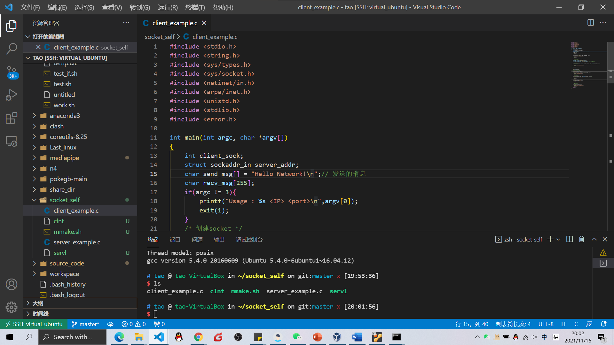

Vscode 连接远程主机可以下载对应插件参考如下:VSCode使用Remote SSH连接远程服务器(服务器端几乎不需要配置)使用VSCode的Remote-SSH连接Linux进行远程开发 - 云+社区 - 腾讯云结果:连接服务器连接虚拟机:Clouddrive网盘挂载本地CloudDrive — 将阿里云盘变成电脑本地磁盘，网盘挂载映射为本地磁盘！help docker 适合国内网盘的免费挂载工具CloudDrive_wbsu2004的博客-CSDN博客dockerDocker Hubqtbar 页面式管理桌面文件夹管理资源管理器QTTabBar 「资源管理器」该有的样子 - 少数派Fences桌面管理Everything + 任务栏搜索Otherspdf process iLovePDF | Online PDF tools for PDF lovers少数派 - 高效工作，品质生活似乎还可以?马小帮 - 专注于互联网科技经验分享！